Some core workouts to strengthen your abs include planks, deadbug, crunches, bird dog, leg raises, mountain climbers, side plank dips, russian twists, and bicycle crunches. All of these workouts can be intensified by including weights or bands, but they can also be easy activities to complete at home
 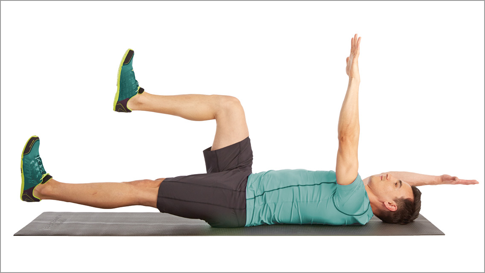
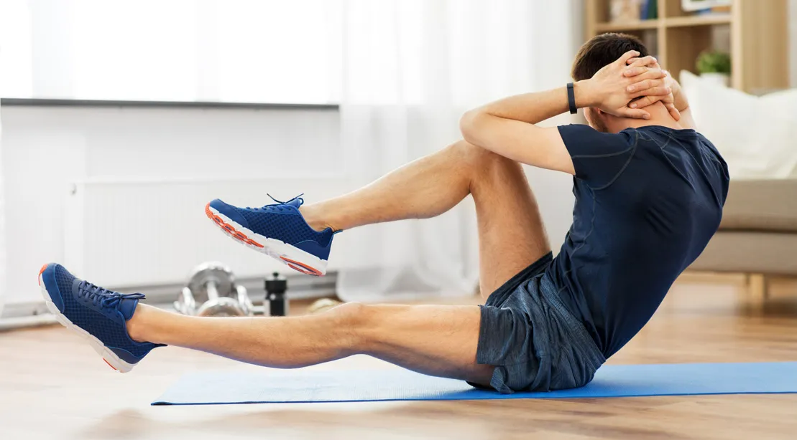
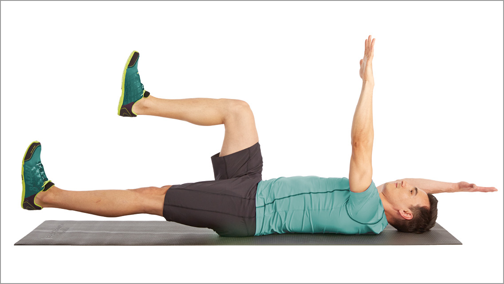
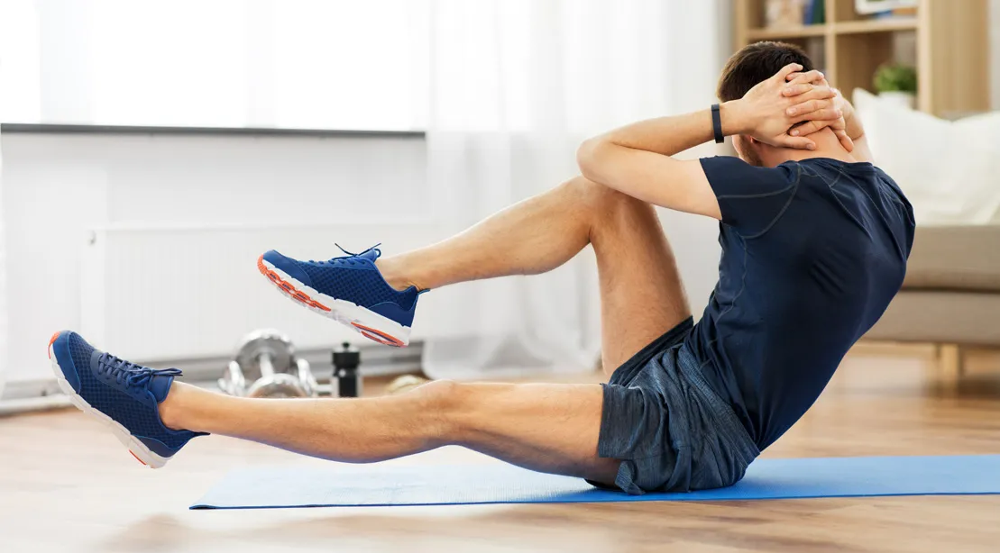
Upper body includes your chest, shoulders, and arms. Some workouts include bent over row, triceps extension, lateral raise, biceps curl, bench press, dumbbell curl, overhead press, pushups, triceps kickback, dips, dumbbell row, chin ups, and push presses. Most of these upper body workouts require some sort of weight or machine, but there are makeshift workouts that one can complete on their own.
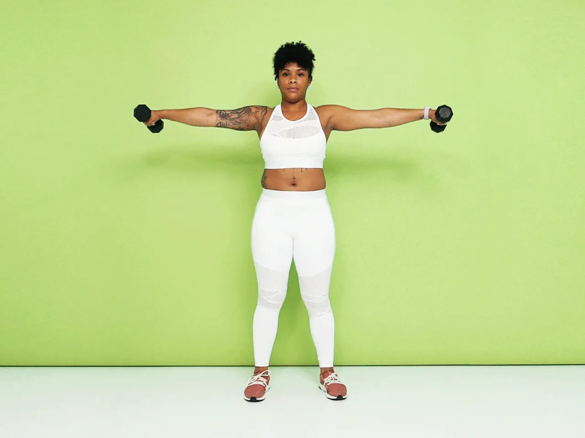 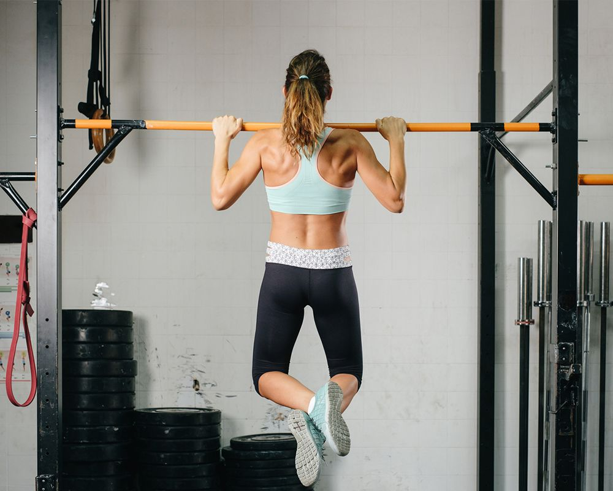
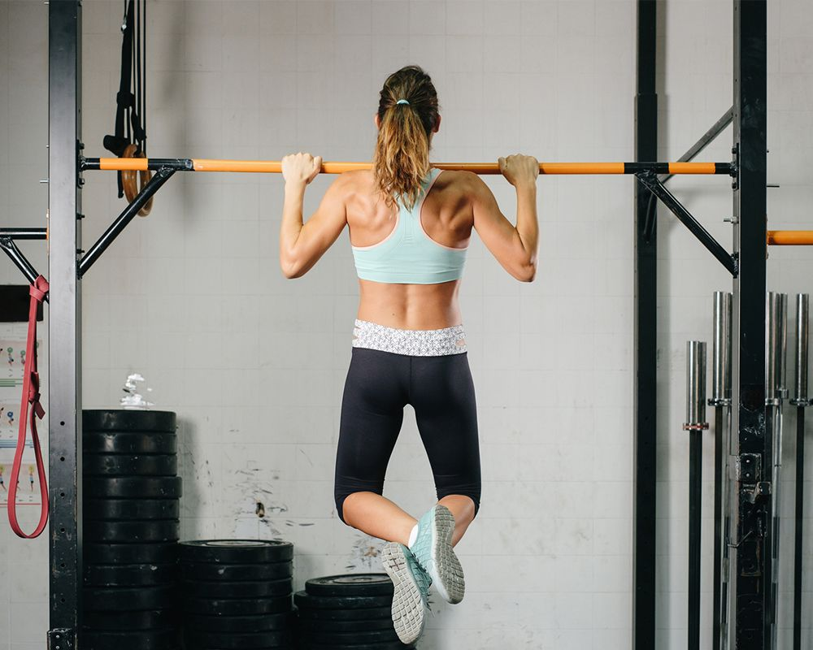
Having strong legs is very important, because legs are what allow you to get around. Some examples of leg exercises include squats, calf raises, goblet squats, romanian deadlifts, leg presses, front barbell squats, split squats, lunges, or glute bridges. These not only strengthen your legs, but also your glutes. Simple exercises like squats and calf raises are able to be performed without weights or machines, but most of these require gym equipment
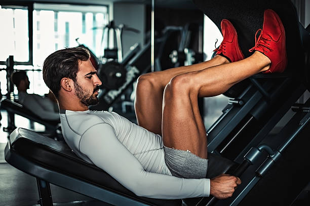 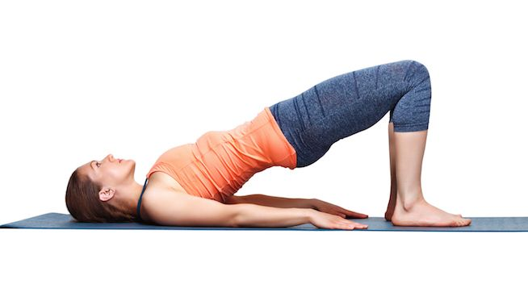 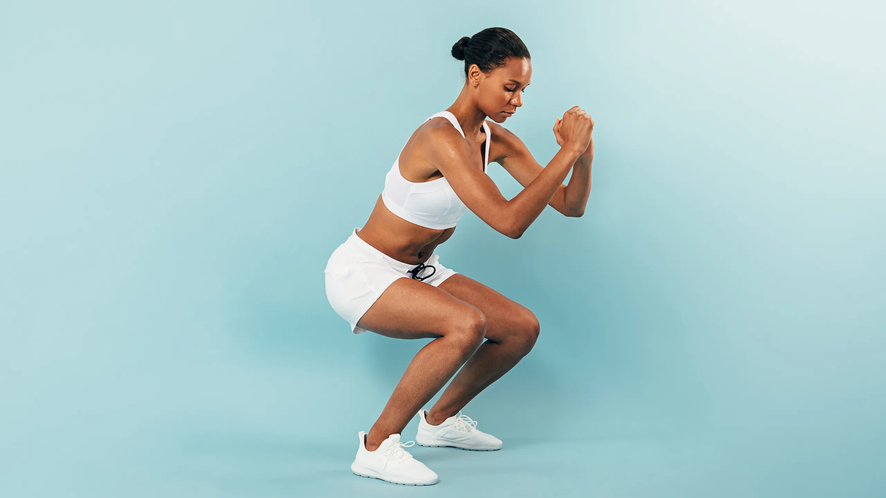Cardio is very important for staying fit and increasing/maintaining your stamina. Cardio is the key to stay thin, and it can also strengthen muscles, specifically in your legs.
Stretching is very important, especially after working out or playing a sport. It allows you to relax and stretch out your muscles so you do not become sore or injured. Some stretches include:
 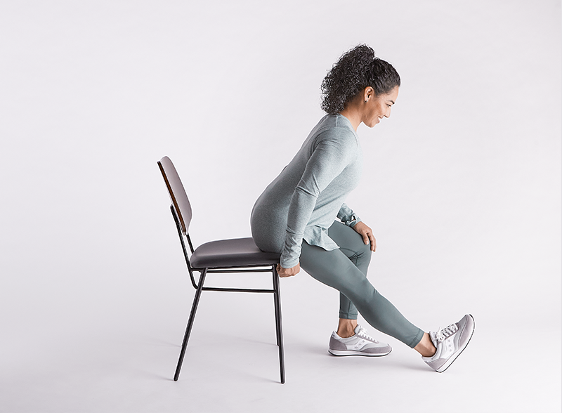
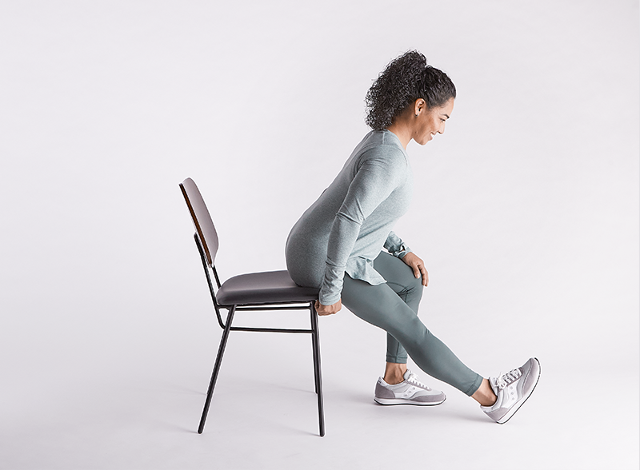
Rehabilitation is the process of helping someone recover from an injury so that they are able to continue to workout or play the sport that injured them in the future. This typically involves therapies, exercises, and support to regain strength, mobility, and independence. Some of the exercises that are meant to help injuries can also be general exercises, but adjusted so that the person is able to perform them. These include quadriceps sets, hamstring curls, bridges, wall angels, clamshells, shoulder blade squeezes, ankles circles, and bird dog.
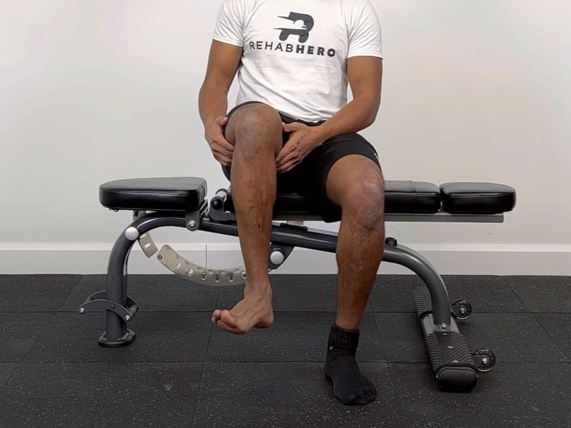 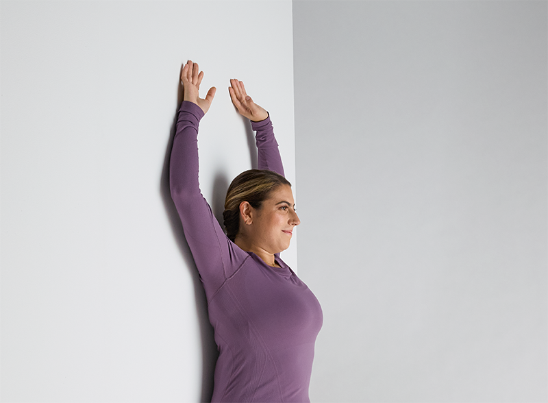 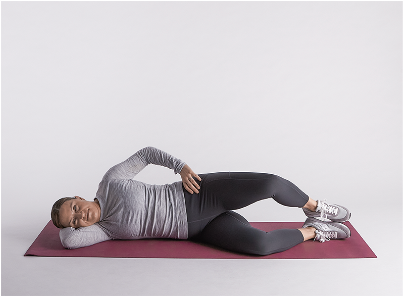